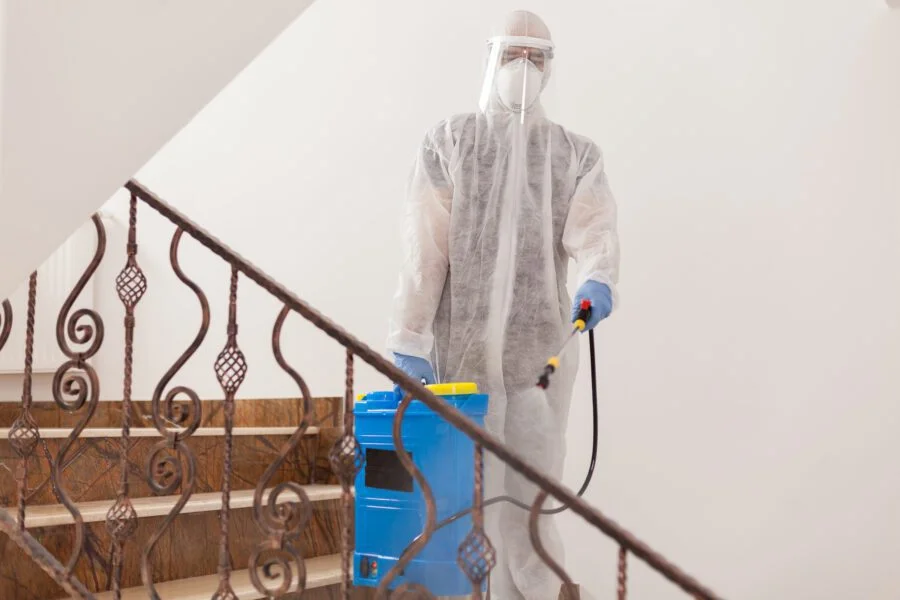

Limpieza con Hielo Seco: Innovación en Mantenimiento y Conservación
Limpieza con Hielo Seco
La limpieza con hielo seco es una tecnología revolucionaria que está cambiando el paradigma en los campos del mantenimiento industrial, la restauración y la limpieza general. Utilizando CO2 sólido, este método no solo es efectivo para una amplia gama de aplicaciones, sino que también es respetuoso con el medio ambiente, dejando atrás los métodos tradicionales que a menudo involucran químicos nocivos o grandes cantidades de agua.
¿Qué es la Limpieza con Hielo Seco?
La limpieza con hielo seco implica el uso de dióxido de carbono sólido (CO2) en forma de pellets que, al ser proyectados a alta velocidad sobre una superficie, subliman al contacto, pasando de sólido a gas sin dejar residuos húmedos o secundarios. Este proceso elimina eficazmente la suciedad, grasa, óxido, pintura, y otros contaminantes sin dañar la superficie subyacente.

Principios Operativos
El proceso de limpieza se basa en tres principios fundamentales: impacto térmico, efecto de expansión y acción de limpieza mecánica. El choque térmico provoca que la suciedad se contraiga y se despegue, el efecto de expansión ayuda a desalojarla, y la acción mecánica la remueve completamente.
Ventajas de la Limpieza con Hielo Seco
- No abrasiva: Ideal para superficies sensibles que no pueden ser tratadas con métodos de limpieza convencionales.
- Sin residuos: Al sublimar, el hielo seco no deja residuos, reduciendo el tiempo y coste asociados a la disposición de desechos.
- Ecológica: No utiliza químicos y minimiza el desperdicio de agua, haciéndola una opción sostenible.
- Seguridad y eficiencia: Apropiada para equipos eléctricos y mecánicos, ya que no conduce electricidad y puede realizarse sin desmontar maquinaria.
- Versatilidad: Efectiva en una variedad de industrias, incluyendo automotriz, aeronáutica, alimenticia, y más.
Aplicaciones Industriales
Desde la limpieza de moldes y equipos de producción hasta la restauración de edificios históricos y la eliminación de grafitis, la limpieza con hielo seco se adapta a numerosas necesidades. Su capacidad para limpiar sin dañar superficies o componentes sensibles la convierte en la elección preferida para mantenimiento preventivo y correctivo en muchas industrias.
Implementación y Equipamiento
El equipo necesario varía desde unidades pequeñas y portátiles para tareas específicas hasta sistemas industriales de gran escala. La selección del equipo adecuado depende de la aplicación, la frecuencia de uso y el alcance de la limpieza requerida.
Formación y Seguridad
Aunque la limpieza con hielo seco es segura, requiere capacitación adecuada para su uso efectivo y seguro. Los operadores deben estar familiarizados con las técnicas de aplicación y las medidas de seguridad, especialmente el uso de protección personal adecuada para evitar quemaduras por frío.
Coste-Efectividad
La inversión inicial en equipos de limpieza con hielo seco puede ser significativa, pero los ahorros en tiempo de limpieza, reducción en el uso de consumibles, y la minimización del tiempo de inactividad de la maquinaria pueden compensar estos costes.
Desafíos y Consideraciones
El principal desafío es el coste inicial y la necesidad de una formación adecuada. Además, la disponibilidad y el almacenamiento del hielo seco pueden ser consideraciones logísticas importantes para algunas operaciones.
Futuro de la Limpieza con Hielo Seco
A medida que la industria busca soluciones más verdes y eficientes, la limpieza con hielo seco continúa ganando popularidad. Su adaptabilidad y los beneficios medioambientales sugieren un futuro brillante en el mantenimiento industrial, la restauración y más allá.
Preguntas Frecuentes
- ¿Puede la limpieza con hielo seco dañar las superficies delicadas?
- ¿Es la limpieza con hielo seco adecuada para todas las industrias?
- ¿Cómo se compara el coste de la limpieza con hielo seco con los métodos tradicionales?
- ¿Cuáles son las principales precauciones de seguridad al usar hielo seco?
Conclusión
La limpieza con hielo seco ofrece una combinación única de eficacia, eficiencia y sostenibilidad, marcando un avance significativo en las prácticas de limpieza y mantenimiento. A medida que más industrias reconocen sus beneficios, su adopción está destinada a crecer, representando un paso adelante hacia métodos de limpieza más responsables con el medio ambiente y eficientes en términos de costes y resultados.